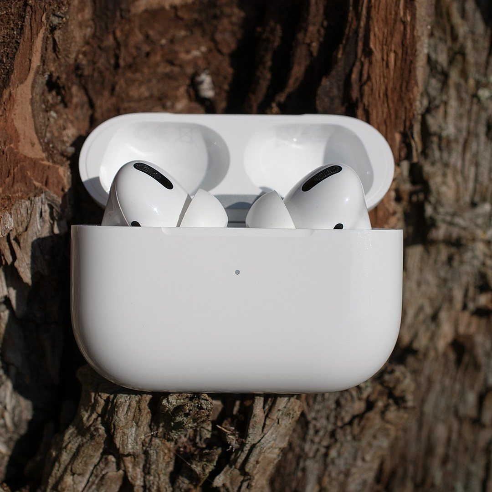
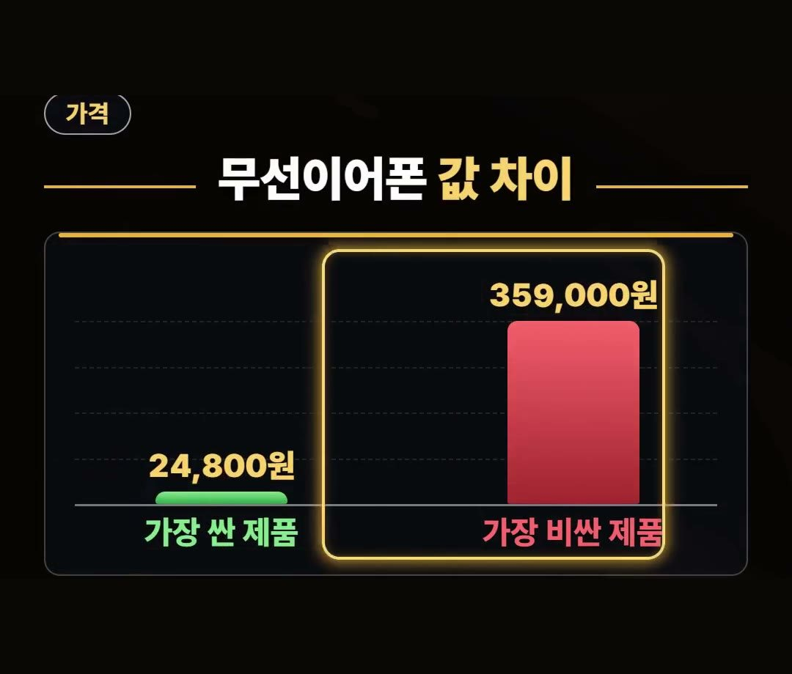
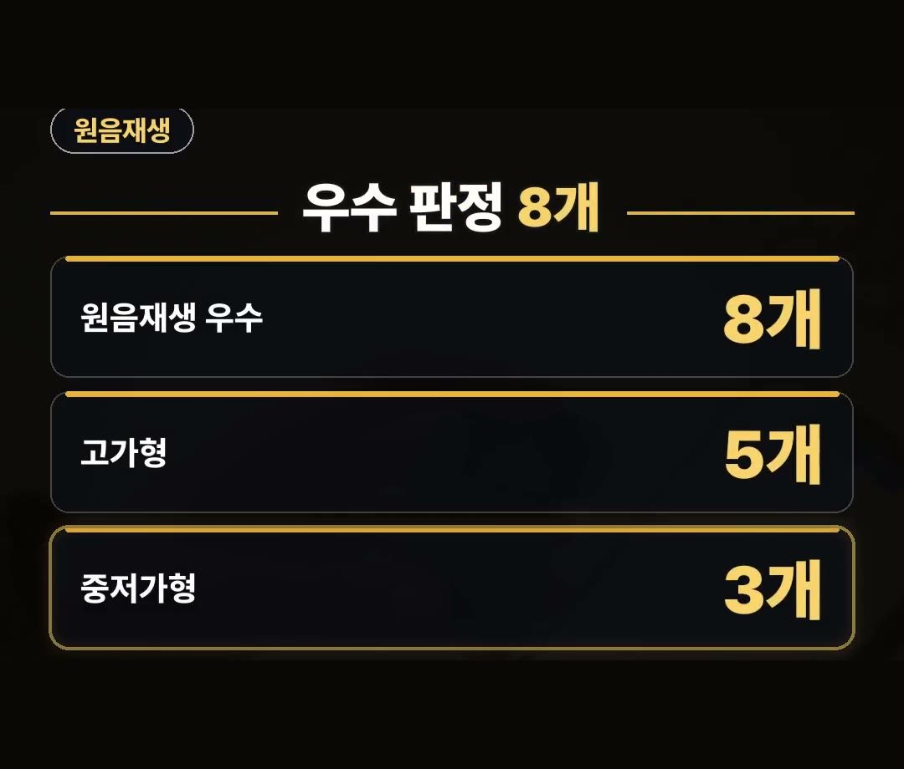
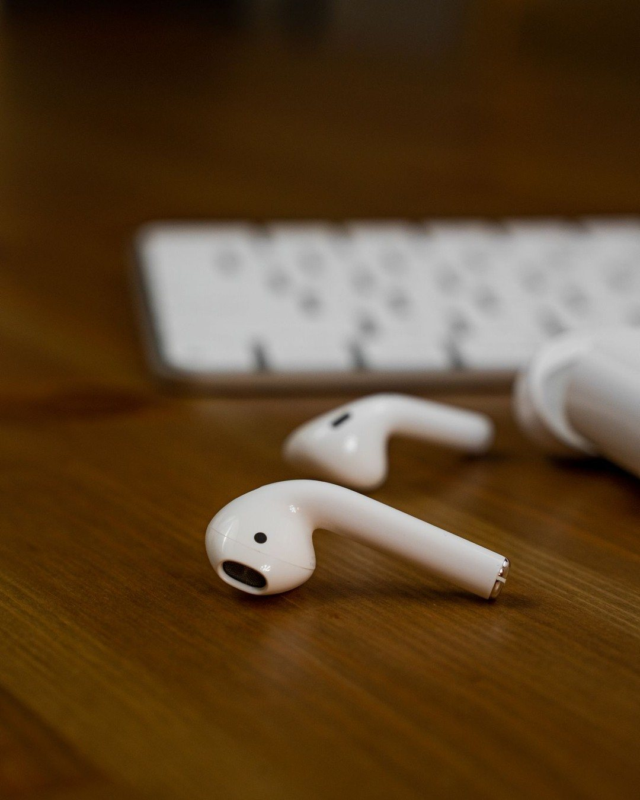
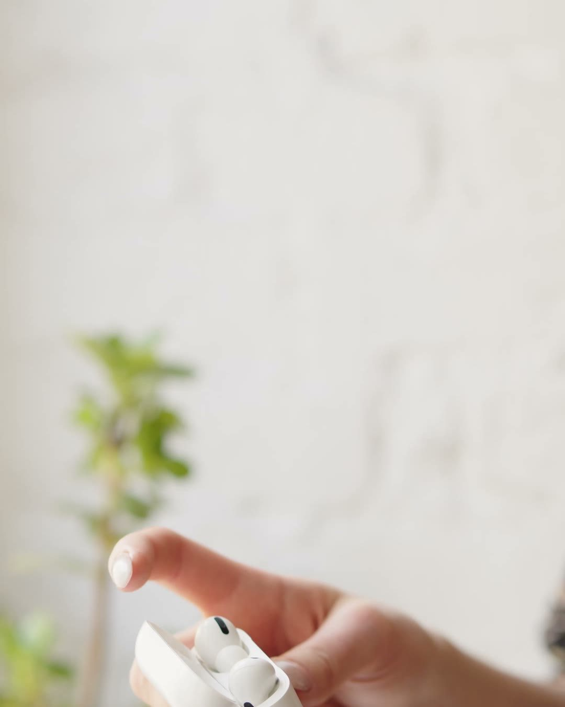

무선이어폰 가성비, 값은 14.5배 차이 나도 음질 우수 판정은 8개였던 시험 결과
※ 이 글에는 제휴 링크가 포함되어 있으며, 링크를 통해 구매하시면 일정 수수료를 받을 수 있습니다. (가격은 같습니다)
※ 이 포스팅은 쿠팡 파트너스 활동의 일환으로, 이에 따른 일정액의 수수료를 제공받습니다.
무선이어폰을 고를 때 많은 분이 하는 실수가 값이 비쌀수록 음질도 그만큼 좋을 거라고 여기고 값부터 보는 거예요.
한국소비자원 비교 시험을 보면 값 차이와 음질 판정이 꼭 같은 방향으로 가지는 않았어요.
이 글에서는 그 결과와 고를 때 볼 3가지를 정리했습니다.
2025년 7월 한국소비자원 비교 시험에서 무선이어폰 10개 제품은 값이 최대 14.5배 차이 났는데, 원음재생 우수 판정은 고가형 5개와 중저가형 3개였어요.
값만 보지 말고 쓰는 곳에 맞는 기능부터 확인하세요! 🎧

무선이어폰 가성비, 값 차이는 최대 14.5배
한국소비자원 자료에 따르면, 2025년 7월에 발표한 무선이어폰 10개 제품 비교에서 값은 이렇게 나뉘었습니다.
- 가장 싼 제품: 24,800원
- 가장 비싼 제품: 359,000원
- 차이: 최대 14.5배
이 값은 2025년 2월 구입가 기준이고, 시험 대상 10개 제품에 한정된 결과예요.
지금 파는 값과는 다를 수 있으니, 숫자는 시험 당시의 차이로만 봐 주세요.

원음재생 우수 판정, 고가형 5개와 중저가형 3개
같은 시험에서 원음재생 성능은 10개 중 8개 제품이 상대적으로 우수했다고 합니다.
- 원음재생 우수: 8개
- 그중 고가형: 5개
- 그중 중저가형: 3개
값이 높은 쪽에서만 우수 판정이 나온 것이 아니라, 중저가형에서도 우수 판정이 나왔다는 점이 눈에 띄어요.
그렇다고 모든 중저가형이 같다는 뜻은 아니에요.
시험 대상 10개 제품 안에서의 결과라는 점을 같이 기억해 두세요.

소음 제거와 통화 품질은 차이가 컸어요
원음재생과 달리 소음 제거와 통화 품질은 제품마다 차이가 있었다고 해요.
그래서 무선이어폰 가성비를 따질 때는 음질 판정 하나만 보고 끝내기보다, 어디서 주로 쓸지를 먼저 떠올려 보는 것이 좋습니다.
- 버스나 지하철처럼 시끄러운 곳에서 많이 듣는다면 소음 제거를
- 이어폰으로 통화를 자주 한다면 통화 품질을
먼저 살펴보는 식이에요.

무선이어폰 추천 전에 볼 3가지
시험 결과를 바탕으로, 무선이어폰 추천을 찾을 때 고를 때 볼 기준 3가지를 정리했습니다.
- 소음 제거: 주로 듣는 곳이 시끄러운지 떠올려 보기
- 통화 품질: 통화를 얼마나 자주 하는지 따져 보기
- 재생 시간: 한 번 충전해서 얼마나 오래 쓰는지 상품 표시로 확인하기
세 가지 가운데 나에게 가장 중요한 것 하나를 먼저 정해 두면, 값이 다른 여러 제품 사이에서 고르기가 수월해집니다.
예를 들어 소음 제거를 가장 중요하게 정했다면, 후보를 그 기능이 있는 제품으로 먼저 좁힌 뒤 통화 품질과 재생 시간을 차례로 견주어 보는 식이에요.
이렇게 순서를 정해 두면 값이 크게 다른 제품들을 한꺼번에 놓고 고민하는 시간이 줄어듭니다.
무선 이어폰 가성비 추천, 선물로 고를 때
11월은 수능이 있고 연말 선물도 고민하는 때라 무선이어폰을 선물로 찾는 분도 많아요.
받는 사람이 통학이나 출퇴근길에 주로 쓴다면 소음 제거를, 통화가 잦다면 통화 품질을 먼저 보는 식으로 위의 3가지를 그대로 대입해 보시면 됩니다.
값만으로 고르기보다 쓰는 곳에 맞춰 고르는 것이 무선 이어폰 가성비 추천을 찾는 분께 가장 쉬운 기준이에요.

정리
- 2025년 7월 한국소비자원 비교에서 무선이어폰 10개 제품 값은 24,800원부터 359,000원까지 최대 14.5배 차이였어요(2025년 2월 구입가 기준).
- 같은 시험에서 원음재생 우수 판정은 8개, 고가형 5개와 중저가형 3개였어요.
- 고를 땐 소음 제거, 통화 품질, 재생 시간 3가지를 보세요.
링크는 아래에 모아 두었어요.
📌 2026년 11월 기준 정보예요. 가격은 시기에 따라 달라질 수 있어요.
· 한국소비자원 소비자24 · 비교공감 제2025-12호 무선이어폰 품질비교 결과(2025년 7월 · 가격은 2025년 2월 구입가 기준)
사진·영상영상 화면: Pexels (Atahan Demir, Berna, Dario Fernandez Ruz, David Lomax, KATRIN BOLOVTSOVA, Monstera Production)
사진: Pexels (Connor Scott McManus)
사진: Pixabay (aixklusiv)